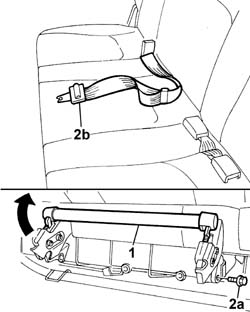
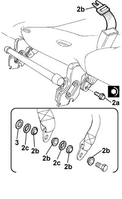

7065B18 CENTRE REAR SEAT BELT - R.R.
- Path
- Procedures > 70 FITTINGS > 7065 SEAT BELTS AND ACCESSORIES > 7065B rear safety belts > 7065B18 CENTRE REAR SEAT BELT - R.R.
- Kind
- repair procedure (removal / refitting; the operation number is the code)
- Applies to
- all engines; all production periods
- Interactive page
- https://sloeber94.github.io/elrnDB-fDbl/en/#/2585233
Applies to: all engines; all production periods; only with equipment: Doblò trim level
 Removing
Removing
 Refitting
Refitting1. Press the lever and fold down the rear seat.
2. Undo the fixing bolt (2a), saving the spacers, and withdraw the seat belt (2b).

Applies to: all engines; all production periods; only with equipment: Doblò trim level
Refitting
Removing1. Fit the seat belt in its seating.
2. Tighten the fixing bolt to torque (2a), fitting the plastic spacers (2b) and washers (2c), as shown in the figure.
 | Fastening | Component | Ø | Value (daNm) |
|---|---|---|---|---|
2a | Bolt | CENTRE REAR BELT. | - | 4 |
3. Fit the retaining washer.

Applies to: all engines; all production periods; only with equipment: Doblò trim level
Reposition the rear seat.